| 지원(SP) 프로세스 | 문서번호 | |||||||||||||||||||||||||||||||||||||||||||||||||||||||
| 문서화된 정보관리 절차서 | MD-0702 | |||||||||||||||||||||||||||||||||||||||||||||||||||||||
| 상위 프로세스 | 문서화된 정보관리 프로세스 | |||||||||||||||||||||||||||||||||||||||||||||||||||||||
| 프로세스의 적용 범위 | 본 절차서는 당사에서 발생되는 문서와 기록사항에 대한 운영을 위한 업무절차에 대하여 적용한다. | |||||||||||||||||||||||||||||||||||||||||||||||||||||||
| 프로세스의 목적 | 문서와 기록에 대한 사항을 문서화된 정보관리 인쇄매체 형태로 운영하면서 문서와 기록에 대한 신뢰성을 | |||||||||||||||||||||||||||||||||||||||||||||||||||||||
| 확보하는데 그 목적이 있다. | ||||||||||||||||||||||||||||||||||||||||||||||||||||||||
| 관리팀장 | ||||||||||||||||||||||||||||||||||||||||||||||||||||||||
| 성과지표 | 산출방법 | 주관부서 | 측정방법 | 주기 | ||||||||||||||||||||||||||||||||||||||||||||||||||||
| (실적/계획) x 100 | 관리팀 | 보고서 | 매월 | |||||||||||||||||||||||||||||||||||||||||||||||||||||
| A.관리팀담당, 관련부서 담당자 | ||||||||||||||||||||||||||||||||||||||||||||||||||||||||
| A.문서/기록 | ||||||||||||||||||||||||||||||||||||||||||||||||||||||||
| A. 전체 프로세스 | ||||||||||||||||||||||||||||||||||||||||||||||||||||||||
| ※ 개정이력 | ||||||||||||||||||||||||||||||||||||||||||||||||||||||||
| NO. | 일자 | 제.개정 내용 | 작성 | 검토 | 승인 | |||||||||||||||||||||||||||||||||||||||||||||||||||
| 0 | 2025-05-28 | ISO 9001:2015 최초 작성 | 결재 完 | 결재 完 | 결재 完 | |||||||||||||||||||||||||||||||||||||||||||||||||||
| 1 | ||||||||||||||||||||||||||||||||||||||||||||||||||||||||
| 2 | ||||||||||||||||||||||||||||||||||||||||||||||||||||||||
| 3 | ||||||||||||||||||||||||||||||||||||||||||||||||||||||||
| 4 | ||||||||||||||||||||||||||||||||||||||||||||||||||||||||
| 5 | ||||||||||||||||||||||||||||||||||||||||||||||||||||||||

| 문서화된 정보관리 절차서 | 문서 번호 | MD-0702 | ||||||||||||||||||||||||||||||||||||||||||||||||||
| 쪽 | 1 | |||||||||||||||||||||||||||||||||||||||||||||||||||
| 제정일자 | 2025-05-28 | 개정 번호 | 1 | 개정 일자 | 2025-05-28 | 시행일자 | 2025-05-28 | |||||||||||||||||||||||||||||||||||||||||||||
| 구분 | IN PUT | OUT PUT | ||||||||||||||||||||||||||||||||||||||||||||||||||
| 관련부서 | 발행부서 | |||||||||||||||||||||||||||||||||||||||||||||||||||
| 변경 및 신규발생 | 문서 제/개정 사항 | |||||||||||||||||||||||||||||||||||||||||||||||||||
| 제/개정 문서 초안 | 엔지니어링 시방서 | |||||||||||||||||||||||||||||||||||||||||||||||||||
| 사외문서 접수 | ||||||||||||||||||||||||||||||||||||||||||||||||||||
| 제/개정할 문서 | 매뉴얼 | |||||||||||||||||||||||||||||||||||||||||||||||||||
| 사외문서 | 프로세스 | |||||||||||||||||||||||||||||||||||||||||||||||||||
| 지침서 | ||||||||||||||||||||||||||||||||||||||||||||||||||||
| 승인된 문서 | ||||||||||||||||||||||||||||||||||||||||||||||||||||
| 배포처 선정 | 문서등록대장 | |||||||||||||||||||||||||||||||||||||||||||||||||||
| 최신본 확인 | 승인된 문서 | |||||||||||||||||||||||||||||||||||||||||||||||||||
| 문서접수 및 확인 | ||||||||||||||||||||||||||||||||||||||||||||||||||||
| 문서등록대장 | ||||||||||||||||||||||||||||||||||||||||||||||||||||
| 접수문서의 분류 | 문서의 파일링 | |||||||||||||||||||||||||||||||||||||||||||||||||||
| 식별번호 부여 | 문서 및 기록분류표 | |||||||||||||||||||||||||||||||||||||||||||||||||||
| 구본문서 회수 | ||||||||||||||||||||||||||||||||||||||||||||||||||||
| 사용중인 문서 | 보관/보존중인 기록 | |||||||||||||||||||||||||||||||||||||||||||||||||||
| 고객과 협의사항 | 적용중인 문서 | |||||||||||||||||||||||||||||||||||||||||||||||||||
| 전자매체 | 계약서 | |||||||||||||||||||||||||||||||||||||||||||||||||||
| 기밀사항 | ||||||||||||||||||||||||||||||||||||||||||||||||||||
| 폐기 대상문서 | 개정 전/후 변경현황 | |||||||||||||||||||||||||||||||||||||||||||||||||||
| 법적 및 고객요구 | 문서등록대장 | |||||||||||||||||||||||||||||||||||||||||||||||||||
×100
×100
×100
×100
사외문서 접수
N
문서 및 기록 분류 / 발행
Y
문서/기록의 작성
검 토
접수 및 업무에 적극 활용
승 인
문서 등록 및 배 포
경영검토 프로세스
Y
N
N
문서의 폐기 / 구본관리
인적자원관리 프로세스
문서, 기록의 보관 및 보존/열람/검색/파일링/식별기밀유지
| #VALUE! | 문서 번호 | MD-0702 | |||||||||||||||||||||||||||||||||||||||||||||||
| 쪽 | 2 | ||||||||||||||||||||||||||||||||||||||||||||||||
| 제정일자 | 2025-05-28 | 개정 번호 | 1 | 개정 일자 | 2025-05-28 | 시행일자 | 2025-05-28 | ||||||||||||||||||||||||||||||||||||||||||
| 1. 용어의 정의 | 용어의정의 | ||||||||||||||||||||||||||||||||||||||||||||||||
| 1.1 문 서 | |||||||||||||||||||||||||||||||||||||||||||||||||
| 품질경영시스템을 수행 하는데 기준이 되는 업무의 원칙과 수행방법, 요건,절차 또는 | |||||||||||||||||||||||||||||||||||||||||||||||||
| 요구사항 등의 업무표준을 기술한 서면화된 글로서 전자매체에 의한 방법도 포함된다. | |||||||||||||||||||||||||||||||||||||||||||||||||
| 단, 본 프로세스에서 문서라 함은 매뉴얼, 프로세스, 지침서, 사외문서, 기술문서 등을 총칭한다. | |||||||||||||||||||||||||||||||||||||||||||||||||
| 1.2 매뉴얼 | |||||||||||||||||||||||||||||||||||||||||||||||||
| 고객 또는 국제표준(ISO)에서의 요구사항에 대하여 회사의 품질/ 정책, 조직, 책임과 | |||||||||||||||||||||||||||||||||||||||||||||||||
| 권한 및 운영체계를 기술한 최상위 문서를 말한다. | |||||||||||||||||||||||||||||||||||||||||||||||||
| 1.3 프로세스 | |||||||||||||||||||||||||||||||||||||||||||||||||
| 당사 내부의 관리업무 전반에 대해 수립된 업무 표준 중에서 특별히 품질활동과 | |||||||||||||||||||||||||||||||||||||||||||||||||
| 관련된 업무를 수행하기 위해 필요한 입력 및 출력사항, 관리기준을 기술한 문서를 말한다. | |||||||||||||||||||||||||||||||||||||||||||||||||
| 1.4 지침서 | |||||||||||||||||||||||||||||||||||||||||||||||||
| 프로세스의 구체적인 업무를 수행하기 위해서 프로세스의 세부해석이나 수행방법 등 | |||||||||||||||||||||||||||||||||||||||||||||||||
| 실질업무 수행에 필요한 문서로서 프로세스의 내용을 위배 할 수 없다. | |||||||||||||||||||||||||||||||||||||||||||||||||
| 1.5 관리본 | |||||||||||||||||||||||||||||||||||||||||||||||||
| 매뉴얼, 프로세스, 지침서, 도면, 작업표준 등으로 품질에 영향을 미치는 업무에 직접 | |||||||||||||||||||||||||||||||||||||||||||||||||
| 적용되는 문서로서 수정, 변경되는 경우에는 항상 최신 개정본으로 유지되어야 하는 문서를 말한다. | |||||||||||||||||||||||||||||||||||||||||||||||||
| 1.6 비관리본 | |||||||||||||||||||||||||||||||||||||||||||||||||
| 매뉴얼, 프로세스, 지침서, 도면, 작업표준 등에 대해 최신본이 발행되어 현재까지 사용된 | |||||||||||||||||||||||||||||||||||||||||||||||||
| 문서를 업무에 적용하지 못하게 된 구본으로서 필요시 업무에 참조하기위해 식별하여 보관 | |||||||||||||||||||||||||||||||||||||||||||||||||
| 하는 참조용 문서를 말한다. | |||||||||||||||||||||||||||||||||||||||||||||||||
| 1.7 기술문서 | |||||||||||||||||||||||||||||||||||||||||||||||||
| 제품의 설계, 검사, 생산 등에서의 기술적 검토자료를 포함하는 문서로서 검사기준서, 도면, | |||||||||||||||||||||||||||||||||||||||||||||||||
| 제조공정도, QC공정도, 관리계획서, FMEA 등이 포함된다. | |||||||||||||||||||||||||||||||||||||||||||||||||
| 1.8 외부출처 문서 | |||||||||||||||||||||||||||||||||||||||||||||||||
| 고객, 외주업체 또는 외부 전문기관이 제공하는 법규, 도면, 설계구상서, 시방서, 기술 규격, | |||||||||||||||||||||||||||||||||||||||||||||||||
| 기타 기술자료 및 정보를 말한다. | |||||||||||||||||||||||||||||||||||||||||||||||||
| 1.9 기 록 | |||||||||||||||||||||||||||||||||||||||||||||||||
| 품질 업무를 수행한 결과물로서 인쇄본 또는 전자매체 형태로 | |||||||||||||||||||||||||||||||||||||||||||||||||
| 구성되어 있는 것을 말한다. | |||||||||||||||||||||||||||||||||||||||||||||||||
| 1.10 보 존 | |||||||||||||||||||||||||||||||||||||||||||||||||
| 품질 업무를 수행한 결과물을 보관기간이 지나, 지정된 장소 또는 | |||||||||||||||||||||||||||||||||||||||||||||||||
| 문서고에 이관하여 보존기간(폐기)까지 유지관리하는 행위를 말한다. | |||||||||||||||||||||||||||||||||||||||||||||||||
| 2. 문서의 종류 | |||||||||||||||||||||||||||||||||||||||||||||||||
| 2.1 업무의 특성에 따른 분류 | |||||||||||||||||||||||||||||||||||||||||||||||||
| 2.1.1 품질 문서 : 매뉴얼, 프로세스, 지침서, 양식 등. | |||||||||||||||||||||||||||||||||||||||||||||||||
| 2.1.2 기술 문서 : 제품 및 생산, 검사, 시험에 직접 관련된 도면, 제조, 시험, 검사/기술표준 등. | |||||||||||||||||||||||||||||||||||||||||||||||||
| 2.1.3 일반문서 : 조직도 및 일반 업무를 수행하면서 발생되는 문서들. | |||||||||||||||||||||||||||||||||||||||||||||||||
| 2.2 기록방식에 따른 분류 | |||||||||||||||||||||||||||||||||||||||||||||||||
| 3. 준수 의무사항 | |||||||||||||||||||||||||||||||||||||||||||||||||
| 3.1 당사는 다음사항을 실행하여야 한다. | |||||||||||||||||||||||||||||||||||||||||||||||||
| 3.1.1 품질경영시스템 및 제품과 관련된 준수 의무사항(법규 및 고객 요구사항)을 규명하고 그것에 접근할 수 있어야 한다. | |||||||||||||||||||||||||||||||||||||||||||||||||
| 3.1.2 이러한 준수 의무사항이 어떻게 당사에 적용 되는지를 규명 하여야 한다. | |||||||||||||||||||||||||||||||||||||||||||||||||
| 3.1.3 시스템을 수립, 실행, 유지 및 지속적으로 개선할 때, 준수 의무사항을 반영해야 한다. | |||||||||||||||||||||||||||||||||||||||||||||||||
| 3.2 당사는 준수의무사항과 관련된 문서화된 정보를 유지관리 한다. | |||||||||||||||||||||||||||||||||||||||||||||||||
| 3.3 준수의무사항은 당사의 리스크 및 기회를 귀결 할 수 있다. | |||||||||||||||||||||||||||||||||||||||||||||||||
| 4.조치계획 | |||||||||||||||||||||||||||||||||||||||||||||||||
| 4.1당사는 다음사항을 계획하여야 한다. | |||||||||||||||||||||||||||||||||||||||||||||||||
| 4.1.1 다음사항을 다루기 위한 조치 | |||||||||||||||||||||||||||||||||||||||||||||||||
| 1)리스크 및 기회 | |||||||||||||||||||||||||||||||||||||||||||||||||
| 2)준수 의무사항 | |||||||||||||||||||||||||||||||||||||||||||||||||
| 3)파악된 리스크와 기회 | |||||||||||||||||||||||||||||||||||||||||||||||||
| 4.1.2 다음을 실행하기 위한 방법 | |||||||||||||||||||||||||||||||||||||||||||||||||
| 1)상기조치를 어떻게 경영시스템 프로세스에 또는 다른 비즈니스 | |||||||||||||||||||||||||||||||||||||||||||||||||
| 프로세스에 통합하고 실행하는가? | |||||||||||||||||||||||||||||||||||||||||||||||||
| 2)이러한 조치의 효과성을 어떻게 평가하는가? | |||||||||||||||||||||||||||||||||||||||||||||||||
| 이러한 조치를 계획할 때, 당사는 기술적 옵션과 당사의 재무적, 운용상 및 | |||||||||||||||||||||||||||||||||||||||||||||||||
| 사업상 요구사항을 고려하여야 한다. | |||||||||||||||||||||||||||||||||||||||||||||||||
| 5. 문서번호체계및주관부서 | |||||||||||||||||||||||||||||||||||||||||||||||||
| 5.1 품질매뉴얼 | |||||||||||||||||||||||||||||||||||||||||||||||||
| 매뉴얼의 문서번호 부여체계는다음과 같이한다. | |||||||||||||||||||||||||||||||||||||||||||||||||
| 품질 매뉴얼 : QM-01 | |||||||||||||||||||||||||||||||||||||||||||||||||
| 5.2 프로세스 관리번호 부여방법 | |||||||||||||||||||||||||||||||||||||||||||||||||
| *양식 개정번호는 최초 작성시 부여하지 않으며 개정시마다 알파벳 | |||||||||||||||||||||||||||||||||||||||||||||||||
| (A,B,C,D,E…….) 순으로 부여한다. | |||||||||||||||||||||||||||||||||||||||||||||||||
| 5.5 ISO요건순서 | |||||||||||||||||||||||||||||||||||||||||||||||||
| 5.6 관리문서 주관부서 (품질팀) | |||||||||||||||||||||||||||||||||||||||||||||||||
| 매뉴얼, 프로세스, 지침서 등의 체계를 명확히 하여 표준운영을 효율적으로 하고 | |||||||||||||||||||||||||||||||||||||||||||||||||
| 표준의 등록, 원본 보관, 작성, 검토, 승인, 배포, 회수 및 폐기 등의 업무를 주관하는 부서. | |||||||||||||||||||||||||||||||||||||||||||||||||
| 5.7 표준 및 문서별 관리 (주관)부서 | |||||||||||||||||||||||||||||||||||||||||||||||||
| *제,개정 승인된 문서의 원본은 주관부서에서 등록,배포관리한다. | |||||||||||||||||||||||||||||||||||||||||||||||||
| 5.8 일반 문서번호 부여 방법(단, 부서 특성에 따라 별도 관리번호를 부여할 수 있다.) | |||||||||||||||||||||||||||||||||||||||||||||||||
| *제/개정된 문서의 효력은 등록 또는 배포시점부터 적용된다. | |||||||||||||||||||||||||||||||||||||||||||||||||
| 6. 문서작성원칙 | |||||||||||||||||||||||||||||||||||||||||||||||||
| 6.1 문서의 체계 | |||||||||||||||||||||||||||||||||||||||||||||||||
| 6.1.1 매뉴얼 | |||||||||||||||||||||||||||||||||||||||||||||||||
| 품질방침에 따라 조직과 책임, 적용범위, 구성요소를 관리하는 방법의 개요를 서술하고, | |||||||||||||||||||||||||||||||||||||||||||||||||
| ISO 9001의 요구사항을 만족시키도록 기술한 것이다. | |||||||||||||||||||||||||||||||||||||||||||||||||
| 6.1.2 프로세스 | |||||||||||||||||||||||||||||||||||||||||||||||||
| 매뉴얼의 하위문서로서 각 업무별로 업무순서 및 방법, INPUT, 관리항목, OUTPUT, | |||||||||||||||||||||||||||||||||||||||||||||||||
| 책임사항, 주기를 문서화한 것이다. | |||||||||||||||||||||||||||||||||||||||||||||||||
| 6.1.3 지침서 | |||||||||||||||||||||||||||||||||||||||||||||||||
| 프로세스의 하위 문서로 프로세스에 명시된 기준, 과정 및 조건 또는 기타 개별적 및 | |||||||||||||||||||||||||||||||||||||||||||||||||
| 생산에 필요한 구체적인 방법이나 수단 등에 관한 작업 또는 업무지침에 대해 | |||||||||||||||||||||||||||||||||||||||||||||||||
| 세부적으로 규정한 것이다. | |||||||||||||||||||||||||||||||||||||||||||||||||
| 6.2 문서의 일반원칙 | |||||||||||||||||||||||||||||||||||||||||||||||||
| 6.2.1 ISO9001의 요건을 만족하여야 한다. | |||||||||||||||||||||||||||||||||||||||||||||||||
| 6.2.2 품질매뉴얼의 요건을 만족하여야 한다. | |||||||||||||||||||||||||||||||||||||||||||||||||
| 6.2.3 시행해야할 대상자가 충분히 이해할 수 있도록 가능한 한 업무의 발생순으로 기술한다. | |||||||||||||||||||||||||||||||||||||||||||||||||
| 6.2.4 규정한 모든 업무 및 작업에 대한 관리방법, 책임, 권한 및 요구사항을 포함하여야 한다. | |||||||||||||||||||||||||||||||||||||||||||||||||
| 6.2.5 필요한 경우 다른 프로세스의 내용을 인용 또는 연계시켜 작성한다. | |||||||||||||||||||||||||||||||||||||||||||||||||
| 6.3 조항 및 세목번호 부여체계 | |||||||||||||||||||||||||||||||||||||||||||||||||
| 6.3.1 조항부호 | |||||||||||||||||||||||||||||||||||||||||||||||||
| 제목이 있는 조항은 그 제목앞에 조항부호를 부여하며 최대 3자리로 정한다. | |||||||||||||||||||||||||||||||||||||||||||||||||
| 1)첫째조항 : N | 1 | ||||||||||||||||||||||||||||||||||||||||||||||||
| 2)둘째조항 : N.N | 1.1 | ||||||||||||||||||||||||||||||||||||||||||||||||
| 3)셋째조항 : N.N.N | 1.1.1 | ||||||||||||||||||||||||||||||||||||||||||||||||
| 보기) 4. 판매계약 절차 | |||||||||||||||||||||||||||||||||||||||||||||||||
| 4.1 계약검토 요건 | |||||||||||||||||||||||||||||||||||||||||||||||||
| 4.1.1 생산의뢰서의 발행 | |||||||||||||||||||||||||||||||||||||||||||||||||
| 6.3.2. 세목부호 | |||||||||||||||||||||||||||||||||||||||||||||||||
| 조항의 내용을 분류하여 순서적으로 나열할 경우 그 내용앞에 세목번호를 | |||||||||||||||||||||||||||||||||||||||||||||||||
| 부여한다. | |||||||||||||||||||||||||||||||||||||||||||||||||
| 1) | |||||||||||||||||||||||||||||||||||||||||||||||||
| 2) | |||||||||||||||||||||||||||||||||||||||||||||||||
| (1) | |||||||||||||||||||||||||||||||||||||||||||||||||
| (2) | |||||||||||||||||||||||||||||||||||||||||||||||||
| 가) | |||||||||||||||||||||||||||||||||||||||||||||||||
| 나) | |||||||||||||||||||||||||||||||||||||||||||||||||
| ① | |||||||||||||||||||||||||||||||||||||||||||||||||
| ② | |||||||||||||||||||||||||||||||||||||||||||||||||
| 보기> 4. 업무분장 | |||||||||||||||||||||||||||||||||||||||||||||||||
| 4.1. 품질팀 | |||||||||||||||||||||||||||||||||||||||||||||||||
| 4.1.1.검사자 | |||||||||||||||||||||||||||||||||||||||||||||||||
| 1) 검사자는 수입/출하검사를 주관하고 판정 결과는 ……. | |||||||||||||||||||||||||||||||||||||||||||||||||
| 7. 문서작성방법 | |||||||||||||||||||||||||||||||||||||||||||||||||
| 7.1 매뉴얼작성 | |||||||||||||||||||||||||||||||||||||||||||||||||
| 7.1.1 매뉴얼의 구성 | |||||||||||||||||||||||||||||||||||||||||||||||||
| 1) 매뉴얼은 표지, 목차, 서문, 방침, 시스템 요건으로 구성한다. | |||||||||||||||||||||||||||||||||||||||||||||||||
| 2) 매뉴얼은 장 단위로 제·개정하며, 장번호를 다음과 같이 부여한다. | |||||||||||||||||||||||||||||||||||||||||||||||||
| (1) 0.1장 : 목 차 | |||||||||||||||||||||||||||||||||||||||||||||||||
| (2) 0.2장 : 서문( 관련조직 / 적용범위) | |||||||||||||||||||||||||||||||||||||||||||||||||
| (3) 0.3장 : 방침(& 목표) | |||||||||||||||||||||||||||||||||||||||||||||||||
| (4) 0.4장 :프로세스전개 | |||||||||||||||||||||||||||||||||||||||||||||||||
| (5) 1장, 2장, ‥‥, X장, X+1장 : 품질경영시스템의 요건 | |||||||||||||||||||||||||||||||||||||||||||||||||
| 7.1.2 매뉴얼 작성시 유의사항 | |||||||||||||||||||||||||||||||||||||||||||||||||
| 1) 명확하고 구체적으로 표현하여 추상적이거나 읽는 사람마다 다르게 해석할 | |||||||||||||||||||||||||||||||||||||||||||||||||
| 수 있는 표현은 피해야 한다. | |||||||||||||||||||||||||||||||||||||||||||||||||
| 2) 각 관련 업무에 대한 책임과 권한을 명확히 설정할 필요가 있다. | |||||||||||||||||||||||||||||||||||||||||||||||||
| 3) 매뉴얼과 프로세스의 업무 내용이 일치되어야 한다. | |||||||||||||||||||||||||||||||||||||||||||||||||
| 4) 용어는 통일시켜야 한다 | |||||||||||||||||||||||||||||||||||||||||||||||||
| 5) 회사의 프로세스 및 지침서를 인용하여 연결될 수 있어야 한다. | |||||||||||||||||||||||||||||||||||||||||||||||||
| 7.2 프로세스 작성 (PROMAP 작성) | |||||||||||||||||||||||||||||||||||||||||||||||||
| 7.2.1 프로세스의 구성 | |||||||||||||||||||||||||||||||||||||||||||||||||
| 1) 프로세스 갑지 : 업무흐름도(Process Flow Chart) , 관리기준 | |||||||||||||||||||||||||||||||||||||||||||||||||
| 2) 프로세스 을지 : 주요관련 표준, 문서/기록 관리 및 프로세스 모니터링 지표 현황 | |||||||||||||||||||||||||||||||||||||||||||||||||
| 3) 기타 – 사용 양식, 작성 사례 | |||||||||||||||||||||||||||||||||||||||||||||||||
| 7.2.2 프로세스 세부 작성(프로세스 갑지/을지 만 규정함) | |||||||||||||||||||||||||||||||||||||||||||||||||
| 1) 프로세스 갑지 작성 | |||||||||||||||||||||||||||||||||||||||||||||||||
| (1) 프로세스 갑지 작성 시에는 “PROCESS ” 와 업무의 “PDCA 관리Cycle” 을 기본 | |||||||||||||||||||||||||||||||||||||||||||||||||
| 개념으로 생각하여야 하며 이러한 기초 위에서 Process가 Mapping됨을 | |||||||||||||||||||||||||||||||||||||||||||||||||
| 고려해야 한다. | |||||||||||||||||||||||||||||||||||||||||||||||||
| (2) PROCESS 란 어떠한 일 처리이든 “요인, 원인계” 로 정의되는 "INPUT" | |||||||||||||||||||||||||||||||||||||||||||||||||
| 인자가 있으며 이로 인해 목적하는 바의 “OUTPUT"을 만들어 내기 위한 | |||||||||||||||||||||||||||||||||||||||||||||||||
| 프로세스가 존재한다. | |||||||||||||||||||||||||||||||||||||||||||||||||
| (3) PDCA Cycle 은 관리사이클로서 일처리의 순서는 계획-시행-확인-조치- | |||||||||||||||||||||||||||||||||||||||||||||||||
| 계획- 시행과 같이 일련의 순환 사이클로서 전개된다는 것이다. | |||||||||||||||||||||||||||||||||||||||||||||||||
| (1) “①" 은 프로세스 갑지에서 업무수행의 기준 또는 표준이 되는 사항에 대한 | |||||||||||||||||||||||||||||||||||||||||||||||||
| 주요관련 프로세스를 명시한다. | |||||||||||||||||||||||||||||||||||||||||||||||||
| (2) “A” 는 프로세스에서 통용되는 기업의 로고 또는 회사명등을 | |||||||||||||||||||||||||||||||||||||||||||||||||
| 기입한다. | |||||||||||||||||||||||||||||||||||||||||||||||||
| (3) “양식명”은 "프로세스 갑지"에서 사용되는 기록 또는 양식의 이름을 | |||||||||||||||||||||||||||||||||||||||||||||||||
| 기입한다. | |||||||||||||||||||||||||||||||||||||||||||||||||
| (4) “양식번호”는 해당되는 양식에 대 하여 관리번호를 부여한다. | |||||||||||||||||||||||||||||||||||||||||||||||||
| (5) “보존연한” 은 회사에서 정하여진 기준이나, 관련법규 / 고객요구에 의해서 | |||||||||||||||||||||||||||||||||||||||||||||||||
| 설정된 보존기간을 기입한다. | |||||||||||||||||||||||||||||||||||||||||||||||||
| (6) "관리부서"는 기록의 작성, 검토, 승인, 배포, 폐기하는 주관 부서명을 기입한다. | |||||||||||||||||||||||||||||||||||||||||||||||||
| (7)"모니터링지표"는해당프로세스에 대한지표를 설정하여 관리하기 위해 기입 | |||||||||||||||||||||||||||||||||||||||||||||||||
| 한다. | |||||||||||||||||||||||||||||||||||||||||||||||||
| (8)"산출공식"은 지표를 관리할 수 있는 %, PPM, 건 등의 단위를 사용한다. | |||||||||||||||||||||||||||||||||||||||||||||||||
| (9)"측정주기"는 모니터링 지표를 관리하기 위한 기간으로 월, 분기, 반기, 년으로 구분하여 | |||||||||||||||||||||||||||||||||||||||||||||||||
| 기입한다. | |||||||||||||||||||||||||||||||||||||||||||||||||
| (10)"측정책임자"는 해당 프로세스의 모니터링 지표를 관리할 담당자를 기록한다. | |||||||||||||||||||||||||||||||||||||||||||||||||
| (11)"승인권자"는 해당 프로세스에 대한 모니터링 지표의 목표 대비 실적에 대한 조치 지시를 할 수 | |||||||||||||||||||||||||||||||||||||||||||||||||
| 있는 결재권자를기록한다. | |||||||||||||||||||||||||||||||||||||||||||||||||
| (12) 상기 사항 이외의 "프로세스 갑지"와 동일 내용의 경우 "프로세스 갑지"와 | |||||||||||||||||||||||||||||||||||||||||||||||||
| 동일하게 작성한다. | |||||||||||||||||||||||||||||||||||||||||||||||||
| (13) 각 해당부서에서는 프로세스에 대한 모니터링 지표의 목표를 달성하기 위해 사업계획과 | |||||||||||||||||||||||||||||||||||||||||||||||||
| 연계시켜 관리한다. | |||||||||||||||||||||||||||||||||||||||||||||||||
| (14) 프로세스는 매년 경영검토시 정기적으로 검토한다. | |||||||||||||||||||||||||||||||||||||||||||||||||
| 7.3지침서 작성 | |||||||||||||||||||||||||||||||||||||||||||||||||
| 7.3.1지침서의구성 | |||||||||||||||||||||||||||||||||||||||||||||||||
| 1)갑지:업무수행내용기록. | |||||||||||||||||||||||||||||||||||||||||||||||||
| 2)을지 : 주요관련 표준, 문서/기록 관리 및 관리지표 현황 | |||||||||||||||||||||||||||||||||||||||||||||||||
| 7.3.2지침서갑지작성 | |||||||||||||||||||||||||||||||||||||||||||||||||
| 1)용어의 정의 | |||||||||||||||||||||||||||||||||||||||||||||||||
| 2)책임과 권한 | |||||||||||||||||||||||||||||||||||||||||||||||||
| 3)업무처리 절차 | |||||||||||||||||||||||||||||||||||||||||||||||||
| 7.3.3지침서 을지 작성 | |||||||||||||||||||||||||||||||||||||||||||||||||
| 1)프로세스 을지 작성방법과 동일하다. | |||||||||||||||||||||||||||||||||||||||||||||||||
| 단, 지침서는 관리 지표를 반드시 작성해야 되는것은 아님. | |||||||||||||||||||||||||||||||||||||||||||||||||
| 7.4 문서의 검토 및 승인 | |||||||||||||||||||||||||||||||||||||||||||||||||
| 품질팀에서는 매뉴얼, 프로세스, 지침서 등이 제/개정이 되면 해당부서 작성자가 서명하며 | |||||||||||||||||||||||||||||||||||||||||||||||||
| 관련부서의 담당자 또는 부서장의 검토를 거쳐 승인권자의 승인을 득한다. | |||||||||||||||||||||||||||||||||||||||||||||||||
| 7.5 당사 품질경영시스템의 일부를 고객이 적용하도록 요구할 경우는 이에 따른다. | |||||||||||||||||||||||||||||||||||||||||||||||||
| 8.사외문서관리 | |||||||||||||||||||||||||||||||||||||||||||||||||
| 8.1 사외문서 번호부여방법 | |||||||||||||||||||||||||||||||||||||||||||||||||
| 사외문서 또는 고객의 문서번호가 없을 경우 주관부서에서 관리번호 부여 및 | |||||||||||||||||||||||||||||||||||||||||||||||||
| 등록관리한다. | |||||||||||||||||||||||||||||||||||||||||||||||||
| *고객이 제시한 문서에 문서번호가 기록 되어있으면 고객의 문서번호를 그대로 사용할 수도 있다. | |||||||||||||||||||||||||||||||||||||||||||||||||
| 8.2 사외문서 접수 관리 | |||||||||||||||||||||||||||||||||||||||||||||||||
| 8.2.1 품질팀에서는 제품생산과 관련된 사외문서가 접수되면 관리번호를 | |||||||||||||||||||||||||||||||||||||||||||||||||
| 부여하고 문서등록대장에 등록하며 부서장의 승인을 득한후 업무에 활용한다. | |||||||||||||||||||||||||||||||||||||||||||||||||
| 8.2.2 품질팀에서는 필요시 사외표준을 관리본 또는 최신본 식별이 가능한 | |||||||||||||||||||||||||||||||||||||||||||||||||
| 고무인을 날인하여 관련부서에 배포하며 문서등록대장에 등록하여 | |||||||||||||||||||||||||||||||||||||||||||||||||
| 유지관리한다. | |||||||||||||||||||||||||||||||||||||||||||||||||
| 8.2.3 품질팀에서는 국제/국가 규격등이 접수되면 문서등록대장에 등록하고 | |||||||||||||||||||||||||||||||||||||||||||||||||
| 부서장의 승인을 받아 유지관리하거나 관련부서로 배포하여 업무에 활용 | |||||||||||||||||||||||||||||||||||||||||||||||||
| 하도록 한다. | |||||||||||||||||||||||||||||||||||||||||||||||||
| 8.2.4 기타 개발 / 안전 / 보건 등에 관련된 사외문서가 접수되면 주관부서에서 | |||||||||||||||||||||||||||||||||||||||||||||||||
| 상기 8.2.1)~3)항과 같이 처리한다. | |||||||||||||||||||||||||||||||||||||||||||||||||
| 8.3 고객으로부터 입수되는 문서 | |||||||||||||||||||||||||||||||||||||||||||||||||
| *EO ,도면, 시방서, SPEC, 기술 자료, 관련 법규, 등. | |||||||||||||||||||||||||||||||||||||||||||||||||
| 8.4 외주업체에서 입수되는 문서 | |||||||||||||||||||||||||||||||||||||||||||||||||
| *기술자료 | |||||||||||||||||||||||||||||||||||||||||||||||||
| *도 면 | |||||||||||||||||||||||||||||||||||||||||||||||||
| *설계변경 요청 | |||||||||||||||||||||||||||||||||||||||||||||||||
| *SPEC | |||||||||||||||||||||||||||||||||||||||||||||||||
| 8.5 사외문서 관리주관부서 | |||||||||||||||||||||||||||||||||||||||||||||||||
| *기술자료 / 관련법규 : 품질팀, 관리팀 | |||||||||||||||||||||||||||||||||||||||||||||||||
| *EO/시방서 : 품질팀 | |||||||||||||||||||||||||||||||||||||||||||||||||
| *도면,SPEC : 품질팀 | |||||||||||||||||||||||||||||||||||||||||||||||||
| *외부전문기관자료 : 품질팀 | |||||||||||||||||||||||||||||||||||||||||||||||||
| 8.6 사외 문서의 형태는 다음과 같으며 이에 국한하지 않는다. | |||||||||||||||||||||||||||||||||||||||||||||||||
| *하드카피(인쇄본) | |||||||||||||||||||||||||||||||||||||||||||||||||
| *전자매체 | |||||||||||||||||||||||||||||||||||||||||||||||||
| *소프트웨어 | |||||||||||||||||||||||||||||||||||||||||||||||||
| 8.7 사외문서 입수자료는 문서입수 후 2주 이내에 요청 또는 업무에 활용하는 부서에 배포한다. | |||||||||||||||||||||||||||||||||||||||||||||||||
| 9 .문서의 개정식별 및 일반관리 | |||||||||||||||||||||||||||||||||||||||||||||||||
| 9.1 문서의 개정부분은 "기울임체" 또는 "밑줄"을 긋고 개정번호를 표기하여 식별 | |||||||||||||||||||||||||||||||||||||||||||||||||
| 되도록 한다. 단, 전자매체의 경우는 붉은색으로 표시 할 수도 있다. | |||||||||||||||||||||||||||||||||||||||||||||||||
| 9.2 페이지가 여러장일 경우는 총페이지, 개개의 페이지를 기록한다. | |||||||||||||||||||||||||||||||||||||||||||||||||
| 보기) 총3 페이지이면, 1/3, 2/3, 3/3으로기록한다. | |||||||||||||||||||||||||||||||||||||||||||||||||
| 9.3 컴퓨터를 사용하여 작성시 문자체는 한글, 영문 모두"굴림체"를 사용한다. | |||||||||||||||||||||||||||||||||||||||||||||||||
| 9.4 문자 크기는 제목 : 20, 내용 : 9~11정도, 중요부분의 식별은 굵게 표시한다. | |||||||||||||||||||||||||||||||||||||||||||||||||
| 9.5 기술 표준의 경우는 해당 프로세스에 따라 처리한다. | |||||||||||||||||||||||||||||||||||||||||||||||||
| 9.6 전산상의 갑지에 부연설명이 필요한것은 파란색, 양식명은 빨강색으로 표시한다. | |||||||||||||||||||||||||||||||||||||||||||||||||
| 9.7 품질경영 시스템 제/개정이 필요한 부서에서는 업무연락 등에 작성하여 품질 | |||||||||||||||||||||||||||||||||||||||||||||||||
| 부서로 통보하면 품질팀에서 타당성을 검토한후 업무에 적용하거나 반려시킨다. | |||||||||||||||||||||||||||||||||||||||||||||||||
| 9.8 품질팀에서는 시스템 개정시 "개정전/후 변경현황"을 작성하여 관리한다. | |||||||||||||||||||||||||||||||||||||||||||||||||
| 10. 문서의 식별 | |||||||||||||||||||||||||||||||||||||||||||||||||
| 10.1 관리본의 식별은 문서의 우측상단에 표시하며 여러 페이지로 연결될 경우는 | |||||||||||||||||||||||||||||||||||||||||||||||||
| 겉장만 표시한다. | |||||||||||||||||||||||||||||||||||||||||||||||||
| 10.2 표시색상은 필요시 관리본은 청색/ 비관리본은 적색으로 하며 그림 1과 같이 | |||||||||||||||||||||||||||||||||||||||||||||||||
| 표시한다. | |||||||||||||||||||||||||||||||||||||||||||||||||
| (그림1) 최신본 구분 표시 | |||||||||||||||||||||||||||||||||||||||||||||||||
| 10.3 관리본 | |||||||||||||||||||||||||||||||||||||||||||||||||
| 문서의 배포처에 제정된 문서가 배포되며 최초 발행 이후에 그 개정본이 계속적으로 | |||||||||||||||||||||||||||||||||||||||||||||||||
| 배포됨으로써 항상 최신본으로 유지되는 문서를 가리킨다. | |||||||||||||||||||||||||||||||||||||||||||||||||
| 10.4 비관리본 | |||||||||||||||||||||||||||||||||||||||||||||||||
| 발행 당시에는 최신본이나 그 이후 개정본이 배부되도록 보장되지 않는 문서를 | |||||||||||||||||||||||||||||||||||||||||||||||||
| 말하며 품질에 영향을 미치는 업무에 직접 적용할 수 없고 단순히 참고용으로 활용한다. | |||||||||||||||||||||||||||||||||||||||||||||||||
| 10.5 각부서에서는 최신본 식별을 위해 별도의 "stamp"를 사용할 수도 있다. | |||||||||||||||||||||||||||||||||||||||||||||||||
| 11. 기록작성 기준 | |||||||||||||||||||||||||||||||||||||||||||||||||
| 11.1 기록은 해당되는 프로세스에 따라 읽기 쉽게 작성하여야 한다. | |||||||||||||||||||||||||||||||||||||||||||||||||
| 11.2 기록은 연필로 작성되어서는 아니된다. 단, 연필로 작성하였을 경우는 | |||||||||||||||||||||||||||||||||||||||||||||||||
| 그 복사본만을 기록으로 관리할 수 있다. | |||||||||||||||||||||||||||||||||||||||||||||||||
| 11.3 양식을 활용할 경우, 모든 공란은 여백을 남기지 않고 채워져야 한다. | |||||||||||||||||||||||||||||||||||||||||||||||||
| 즉, 해당사항이 없을 경우, 줄을 긋거나, ‘해당사항 없음’ 또는 ‘이하 | |||||||||||||||||||||||||||||||||||||||||||||||||
| 여백’을 표기하여, 기록의 승인후에 내용이 추가로 기록될 수 없도록 | |||||||||||||||||||||||||||||||||||||||||||||||||
| 하여야한다. | |||||||||||||||||||||||||||||||||||||||||||||||||
| 11.4 기록의 작성시에 오자로 인해 수정할 경우에는 반드시 해당부위에 | |||||||||||||||||||||||||||||||||||||||||||||||||
| 줄을 긋고 수정 자가 직접 날인 또는 서명을 하여야 한다. | |||||||||||||||||||||||||||||||||||||||||||||||||
| 11.5 검토 의견 또는 지적사항을 기재할 경우, 기재내용의 끝 부분에 해당 | |||||||||||||||||||||||||||||||||||||||||||||||||
| 검토자 또는 승인자 의 서명 또는 날인 및 일자를 기재하여야 한다. | |||||||||||||||||||||||||||||||||||||||||||||||||
| 11.6 모든 기록물은 수정액을 사용하여 수정할 수 없다. | |||||||||||||||||||||||||||||||||||||||||||||||||
| 12. 기록의 보존연한 | |||||||||||||||||||||||||||||||||||||||||||||||||
| 12.1 기록 보존연한은 기준에서 정한 것을 제외하고는 아래에 | |||||||||||||||||||||||||||||||||||||||||||||||||
| 기준에 의하며 이에 국한하지 않는다. | |||||||||||||||||||||||||||||||||||||||||||||||||
| 12.1.1 영구보존 | |||||||||||||||||||||||||||||||||||||||||||||||||
| 회사의 존속에 필요불가결한 기본문서로서 회사, 사규, 중요관공서의 | |||||||||||||||||||||||||||||||||||||||||||||||||
| 인허가 사항, 등기에 관한 문서 및 기타 회사 경영에 중요하다고 인정 | |||||||||||||||||||||||||||||||||||||||||||||||||
| 되는 문서 | |||||||||||||||||||||||||||||||||||||||||||||||||
| 12.1.2 10년 보존 | |||||||||||||||||||||||||||||||||||||||||||||||||
| 업무상 중요도가 높거나 5년이상 장기간 보관하여 업무수행상 이용 | |||||||||||||||||||||||||||||||||||||||||||||||||
| 가치와 필요성이 있다고 인정되는 문서 | |||||||||||||||||||||||||||||||||||||||||||||||||
| 12.1.3 5년 보존 | |||||||||||||||||||||||||||||||||||||||||||||||||
| 기록류 중 중요도가 비교적 낮은 문서이지만 업무수행상 이용가치와 | |||||||||||||||||||||||||||||||||||||||||||||||||
| 필요성이 있어 5년 간 보관을 요하는 문서 | |||||||||||||||||||||||||||||||||||||||||||||||||
| 12.1.4 3년 보존 | |||||||||||||||||||||||||||||||||||||||||||||||||
| 업무수행상 2년이상에 걸쳐 참고 또는 이용해야 할 가치가 있는 문서 | |||||||||||||||||||||||||||||||||||||||||||||||||
| 12.1.5 1년 보존 | |||||||||||||||||||||||||||||||||||||||||||||||||
| 경미한 연락서류 및 기록으로 업무수행상 일시적인 참고 또는 | |||||||||||||||||||||||||||||||||||||||||||||||||
| 이용에 필요한 문서 | |||||||||||||||||||||||||||||||||||||||||||||||||
| 12.2 기록 보존연한은 각 프로세스 및 지침서/목록표에 명시된 보존연한으로 하며 | |||||||||||||||||||||||||||||||||||||||||||||||||
| 기준에서 정함이 없는 것은 각 부서장이 그 중요도를 고려하여 상기 각호의 | |||||||||||||||||||||||||||||||||||||||||||||||||
| 기준에 따라 정하여야 한다. | |||||||||||||||||||||||||||||||||||||||||||||||||
| 12.3 기록 보존연한의 기산일은 기록 발생연도＋보존연한으로 한다. | |||||||||||||||||||||||||||||||||||||||||||||||||
| 12.4 해당부서는 기록 내용과 특수성을 감안하여 보존연한을 연장 또는 단축할 | |||||||||||||||||||||||||||||||||||||||||||||||||
| 수 있으며 법적 또는 고객이 보존연한을 명시할 경우는 이에 따른다. | |||||||||||||||||||||||||||||||||||||||||||||||||
| 12.5 해당되는 경우, PL법관련기록은15년(제품을 생산한 날로부터 : 10년, 손해 및 사고발생일로 | |||||||||||||||||||||||||||||||||||||||||||||||||
| 부터 : 3년, 소송 및 재판 진행 : 2년) 이상 보존한다. | |||||||||||||||||||||||||||||||||||||||||||||||||
| 13. 문서/기록의 파일링 기준 | |||||||||||||||||||||||||||||||||||||||||||||||||
| 13.1 문서/기록은 매건마다 그 발생과정과 내용에 따라 분류하여 당해연도 문서 | |||||||||||||||||||||||||||||||||||||||||||||||||
| /기록만 편철한다. 단, 연간 발생매수가 적은 것은 연도 구분없이 파일할 수 있다. | |||||||||||||||||||||||||||||||||||||||||||||||||
| 13.2 문서/기록의 보관은 바인더를 이용하여 파일하여야 한다. | |||||||||||||||||||||||||||||||||||||||||||||||||
| 13.3 문서/기록 분류체계에 따라 분류한 문서/기록이 각각 소량인 경우에는 | |||||||||||||||||||||||||||||||||||||||||||||||||
| 하나의 주된 문서/기록 보관철에 통합하여 편철할 수 있다. | |||||||||||||||||||||||||||||||||||||||||||||||||
| 13.4 동일한 분류기호의 문서/기록을 보관/보존 기간별로 구분할 필요가 있을 | |||||||||||||||||||||||||||||||||||||||||||||||||
| 때는 보관/보존 기간별로 분류하여야 한다. | |||||||||||||||||||||||||||||||||||||||||||||||||
| 13.5 편철된 문서 및 기록의 보관/보존철 표지식별 및 바인더의 표시는 | |||||||||||||||||||||||||||||||||||||||||||||||||
| 문서분류기호, 문서명, 작성연도 및 부서명을 기재하여야 한다. | |||||||||||||||||||||||||||||||||||||||||||||||||
| 13.6 1 건철의 문서/기록 내용이 다른 1건철의 문서/기록과 관련이 있는 경우 | |||||||||||||||||||||||||||||||||||||||||||||||||
| 에는 문서/기록의 중요도와 발생원이 최초인 1건철에 원본을 철하고, | |||||||||||||||||||||||||||||||||||||||||||||||||
| 부수적인 1건철에는 원본에 갈음하는 사본을 철한다 | |||||||||||||||||||||||||||||||||||||||||||||||||
| 13.7 첨부물이 책자 또는 기타 인쇄물로서 편철하기 곤란한 경우에는 표지에 | |||||||||||||||||||||||||||||||||||||||||||||||||
| 관계문서 /기록의 분류기호, 제목, 시행일자, 부서명 등 관련근거를 기재 | |||||||||||||||||||||||||||||||||||||||||||||||||
| 하여 별도 보관한다. | |||||||||||||||||||||||||||||||||||||||||||||||||
| 13.8 문서및기록분류표에는 중요품질문서 및 기록에 "*"표시(필요시)를 한다. | |||||||||||||||||||||||||||||||||||||||||||||||||
| 14. 문서/ (프로세스 포함)/기록의 제/개정 관리 및 이전버전 참조 관련 | |||||||||||||||||||||||||||||||||||||||||||||||||
| 14.1 문서/기록의 개정 사항 발생시 일일이 합의부서, 성명, 서명을 받지 않고, 작성, 검토, | |||||||||||||||||||||||||||||||||||||||||||||||||
| 승인(대표이사 또는 품질경영담당)의 승인으로 갈음할 수 있으며, 회사 시스템 게시한다. | |||||||||||||||||||||||||||||||||||||||||||||||||
| 14.2 최종 품질문서에서 그 내용이 없거나 빠진 경우에는 이전버전의 품질/절차서의 | |||||||||||||||||||||||||||||||||||||||||||||||||
| 문서를 참조한다. | |||||||||||||||||||||||||||||||||||||||||||||||||
×100
×100
×100
×100
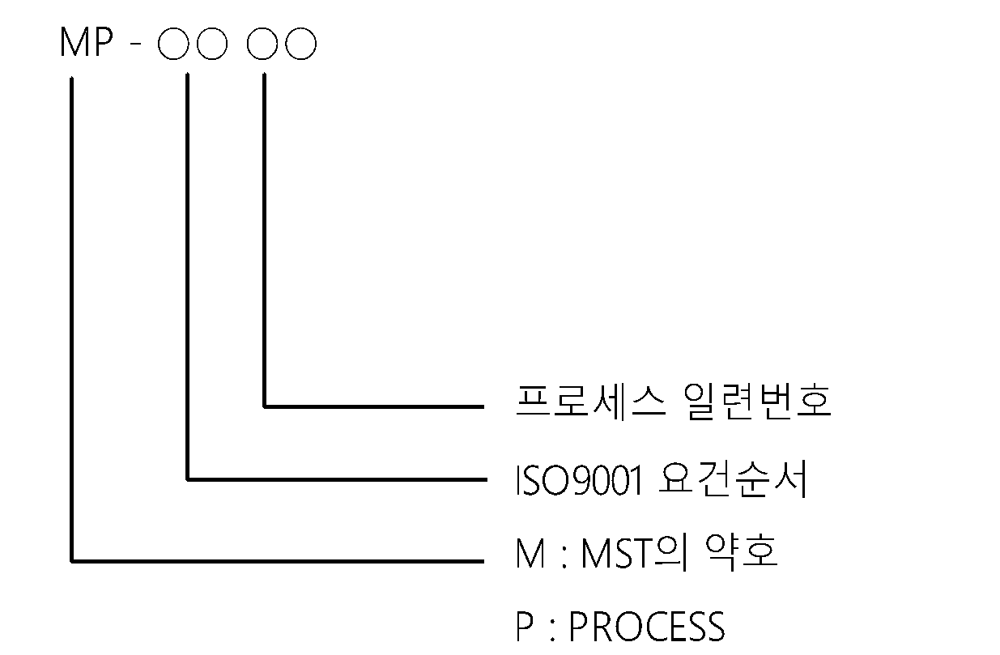
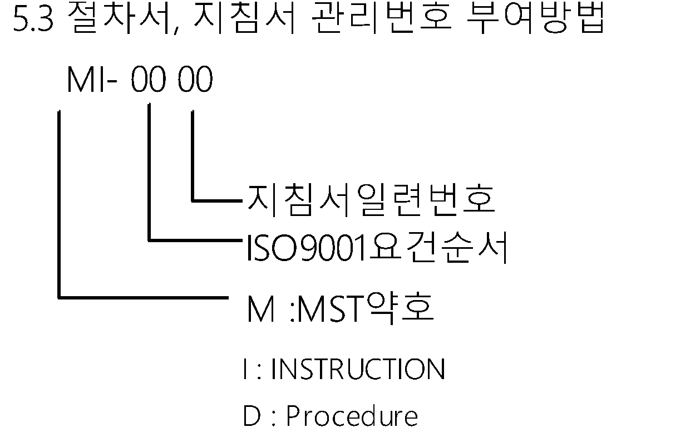
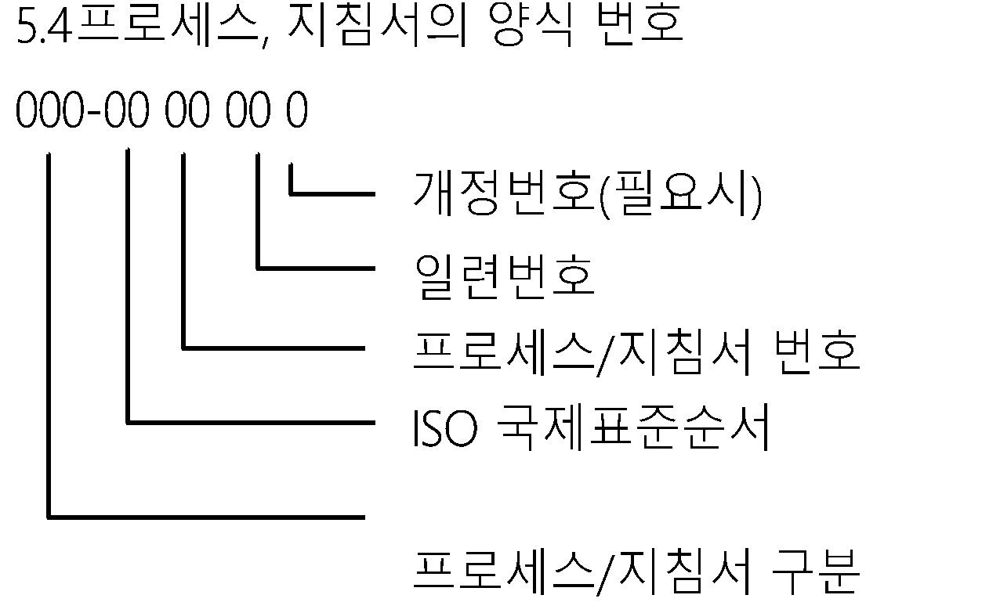
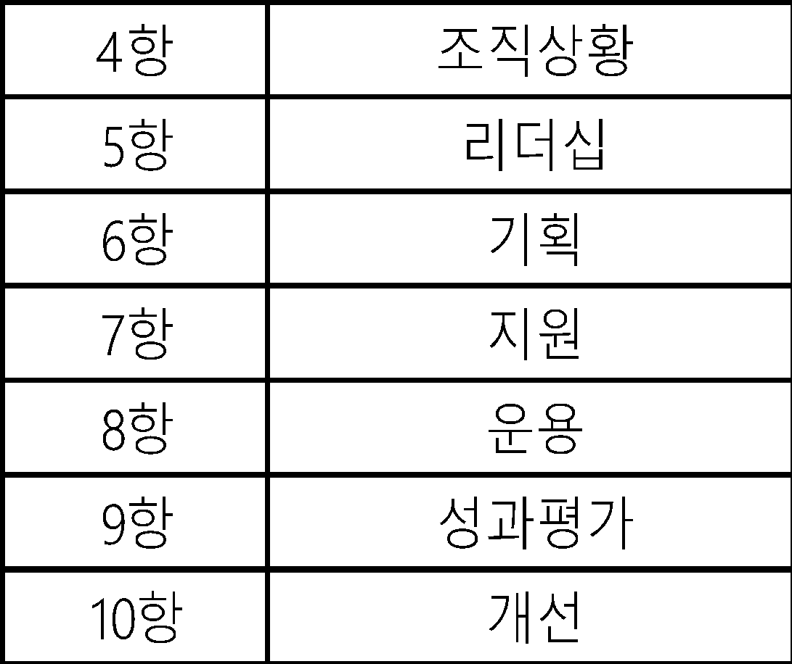
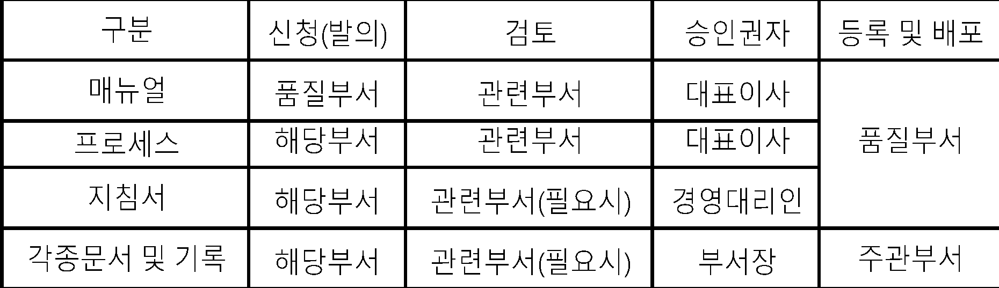
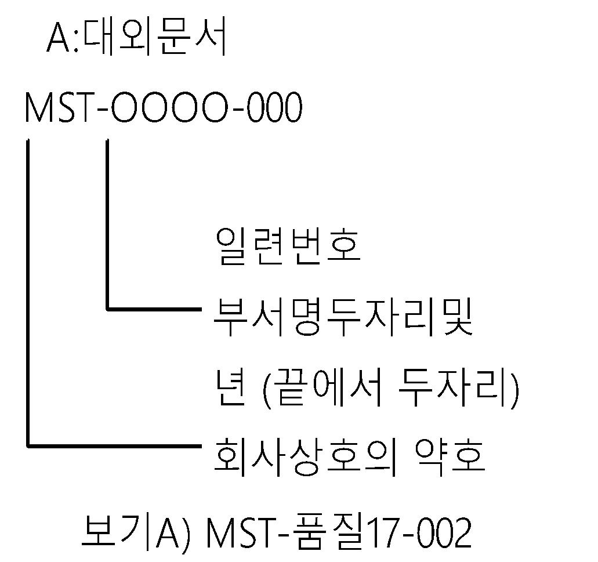
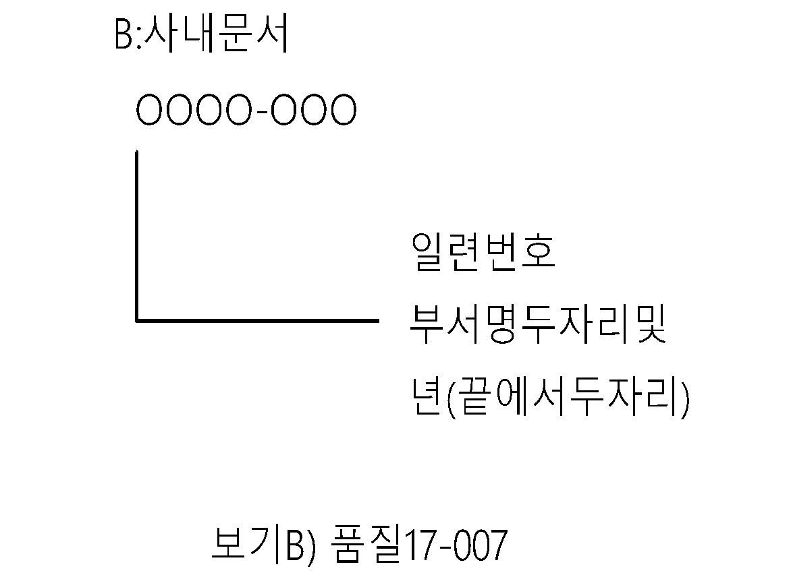
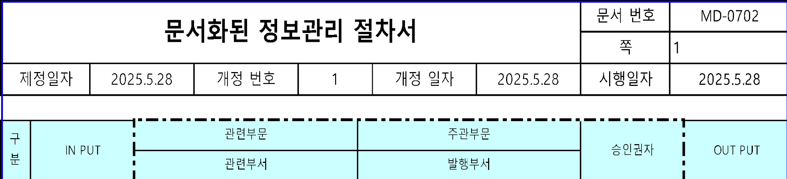
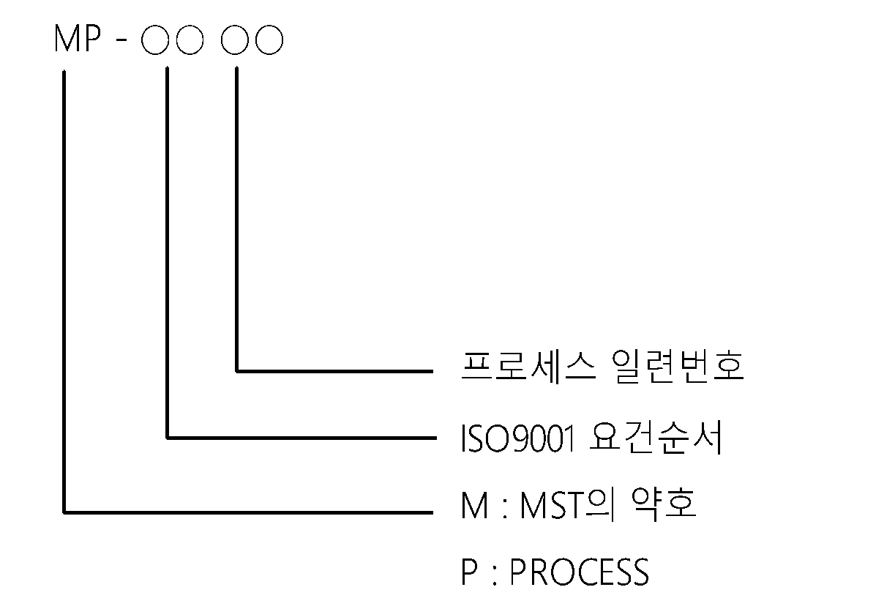
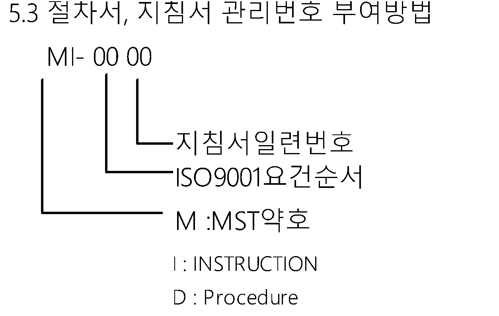
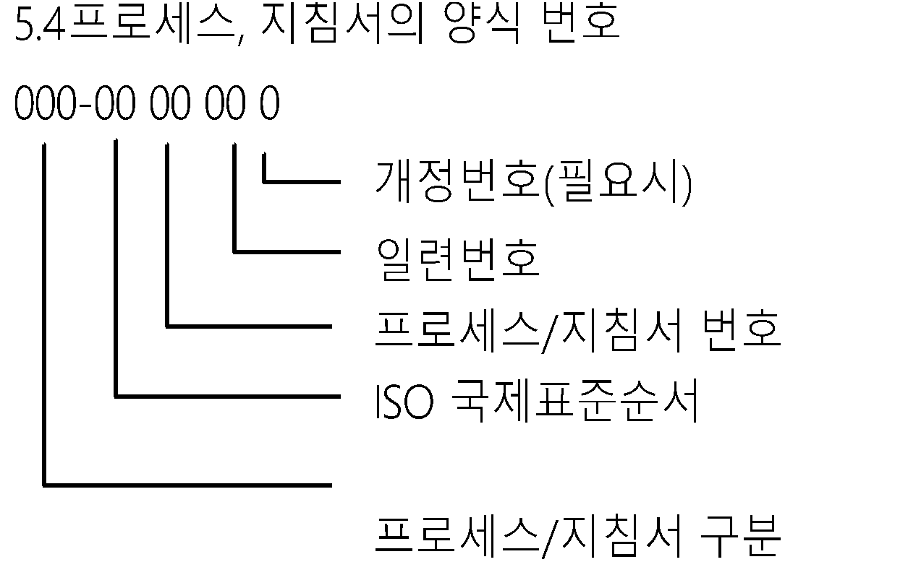
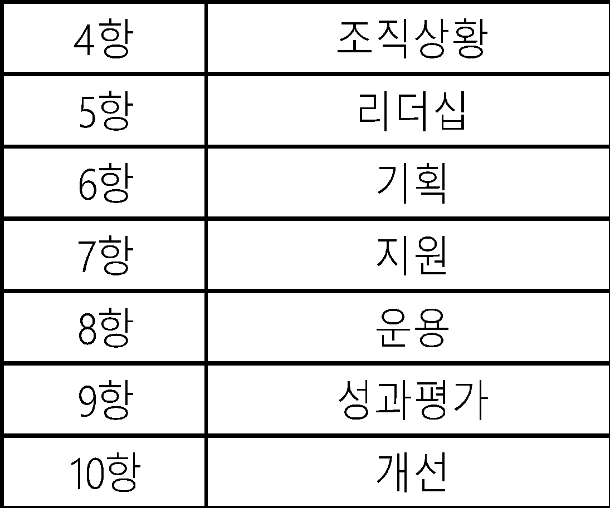
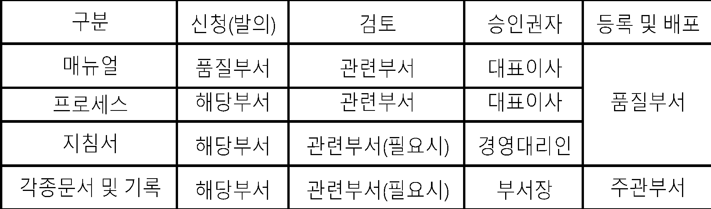
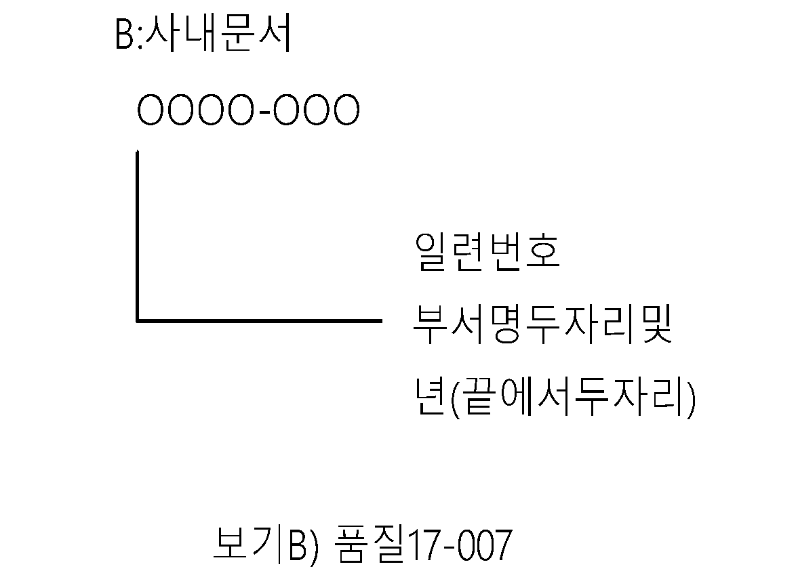
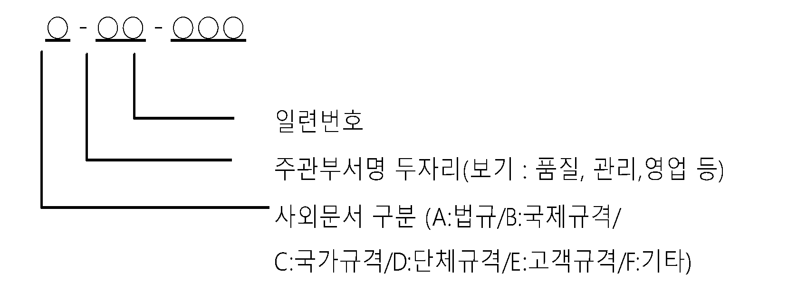
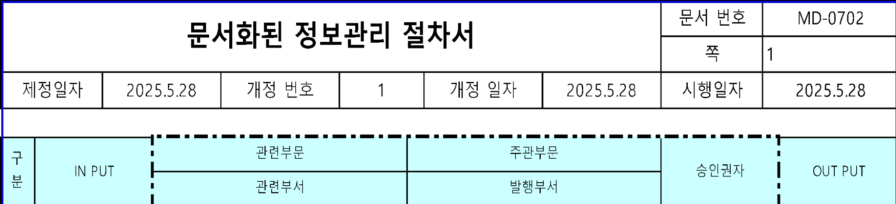
| MP - ○○ ○○ | |||||||||||||||||||||||||||||||||||||||||||||||||||
| 프로세스 일련번호 | |||||||||||||||||||||||||||||||||||||||||||||||||||
| ISO9001 요건순서 | |||||||||||||||||||||||||||||||||||||||||||||||||||
| M : MST의 약호 | |||||||||||||||||||||||||||||||||||||||||||||||||||
| P : PROCESS | |||||||||||||||||||||||||||||||||||||||||||||||||||
| 5.3 절차서, 지침서 관리번호 부여방법 | 5.4프로세스, 지침서의 양식 번호 | ||||||||||||||||||||||||||||||||||||||||||||||||||
| MI- 00 00 | 000-00 00 00 0 | ||||||||||||||||||||||||||||||||||||||||||||||||||
| 개정번호(필요시) | |||||||||||||||||||||||||||||||||||||||||||||||||||
| 지침서일련번호 | 일련번호 | ||||||||||||||||||||||||||||||||||||||||||||||||||
| ISO9001요건순서 | 프로세스/지침서 번호 | ||||||||||||||||||||||||||||||||||||||||||||||||||
| M :MST약호 | ISO 국제표준순서 | ||||||||||||||||||||||||||||||||||||||||||||||||||
| 프로세스/지침서 구분 | |||||||||||||||||||||||||||||||||||||||||||||||||||
| 4항 | 조직상황 | A:대외문서 | B:사내문서 | ○ - ○○ - ○○○ | |||||||||||||||||||||||||||||||||||||||||||||||
| 5항 | 리더십 | MST-OOOO-000 | OOOO-OOO | ||||||||||||||||||||||||||||||||||||||||||||||||
| 6항 | 기획 | 일련번호 | |||||||||||||||||||||||||||||||||||||||||||||||||
| 7항 | 지원 | 일련번호 | 일련번호 | 주관부서명 두자리(보기 : 품질, 관리,영업 등) | |||||||||||||||||||||||||||||||||||||||||||||||
| 8항 | 운용 | 부서명두자리및 | 부서명두자리및 | 사외문서 구분 (A:법규/B:국제규격/ | |||||||||||||||||||||||||||||||||||||||||||||||
| 9항 | 성과평가 | 년 (끝에서 두자리) | 년(끝에서두자리) | C:국가규격/D:단체규격/E:고객규격/F:기타) | |||||||||||||||||||||||||||||||||||||||||||||||
| 10항 | 개선 | 회사상호의 약호 | |||||||||||||||||||||||||||||||||||||||||||||||||
| 구분 | 신청(발의) | 검토 | 승인권자 | 등록 및 배포 | 보기A) MST-품질17-002 | 보기B) 품질17-007 | |||||||||||||||||||||||||||||||||||||||||||||
| 매뉴얼 | 품질팀 | 관련부서 | 대표이사 | 품질팀 | |||||||||||||||||||||||||||||||||||||||||||||||
| 프로세스 | 해당부서 | 관련부서 | 대표이사 | ||||||||||||||||||||||||||||||||||||||||||||||||
| 지침서 | 해당부서 | 관련부서(필요시) | 경영대리인 | ||||||||||||||||||||||||||||||||||||||||||||||||
| 각종문서 및 기록 | 해당부서 | 관련부서(필요시) | 부서장 | 주관부서 | |||||||||||||||||||||||||||||||||||||||||||||||
N
N
Y
문서 관리 프로세스
문서번호
개정일자
개정번호
Page
Step
부서구분
업무흐름도(Process Map)
INPUT
관리책임
관리기준(Control Criteria)
주기
업무수행내용
OUTPUT
점검항목
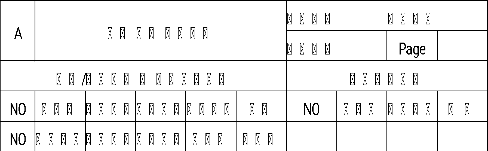
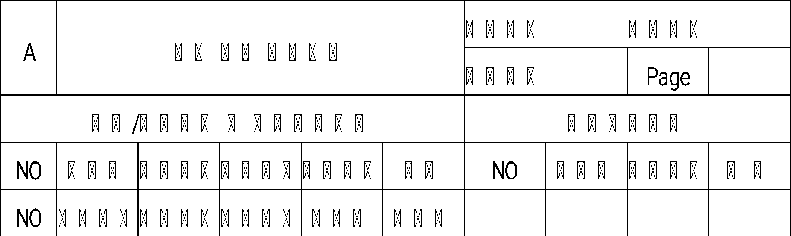